低速高精，适合室内移动底盘
步进电机配合减速器，默认固件偏向平稳低速，柔性启停更顺滑，适合定位、巡航和教学实验。
DW69 面向小型 AGV / UGV / ROS 小车与教学实验平台。它把 69mm 耐磨橡胶轮、6061 铝合金轮毂与底座、步进电机减速一体机整合在一起， 让你少画结构、少配零件，把时间留给底盘算法和上层应用。
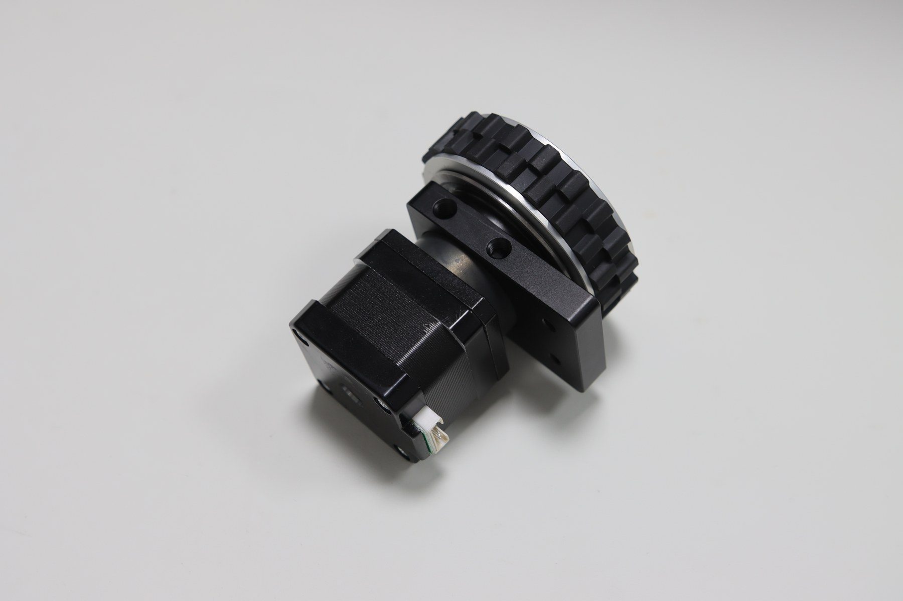
普通轮子要自己解决轮毂、轴承、安装座、减速电机、控制板和线束；DW69 把底盘驱动里的重复工作标准化， 更适合快速搭建可运行的机器人底盘。
步进电机配合减速器，默认固件偏向平稳低速，柔性启停更顺滑，适合定位、巡航和教学实验。
轮内安装法兰轴承来承重，配合 6061 铝合金底座，减少外部支撑结构的设计压力。
15mm 接地宽度，耐磨橡胶胎皮；磨损后可更换胎面，不必整体报废轮组。
支持 TTL 总线步进驱动，可与飞特 TTL 总线舵机复用同一总线，适合多轮、多执行器系统。
驱动板支持心跳保护，通信异常时更安全；柔性启停让底盘动作更自然，降低机械冲击。
两轮平衡、板金四驱、铝型材四驱等案例可复用，模型资料可下载，降低从 0 到 1 的成本。
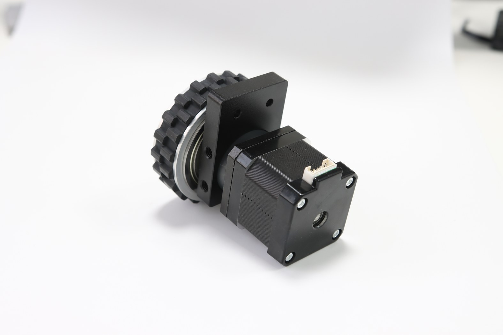
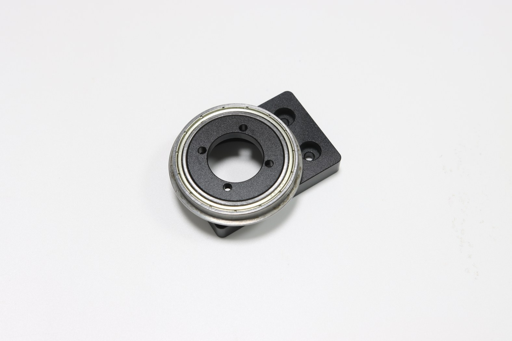
你可以用 PC / 树莓派 / Jetson / RK 通过 USB 转 TTL 接入，也可以用 ESP32、STM32、Arduino 等 MCU 通过 UART RX/TX 直接控制。 页面示例采用 TTL Stepper Driver（A）方案，方便快速验证速度、加速度与电流参数。
# Python 控制 ID:1，目标速度 500，加速度 5，相电流 200
packetHandler.WritePosEx(1, 0, 500, 5, 200)
// C++ 控制 ID:2，目标速度 -300，加速度 5，相电流 200
ttlsd.stepsCtrl(2, 0, -300, 5, 200);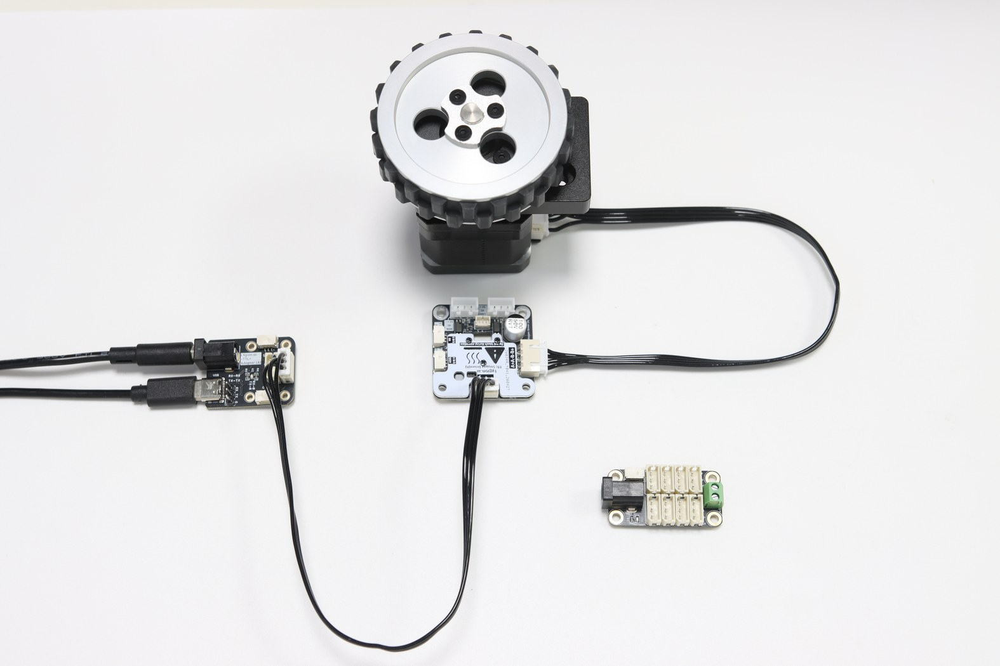
从“只需要结构轮组”到“直接接 TTL 总线控制”，都可以逐步升级。
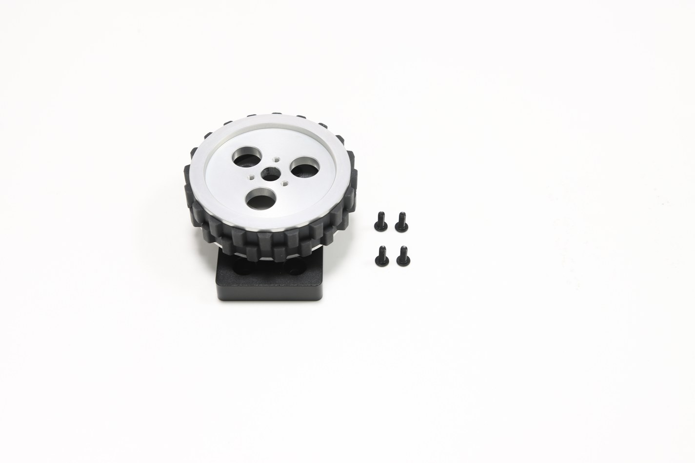
适合希望自行选择电机、减速器或仅需轮组结构的用户。
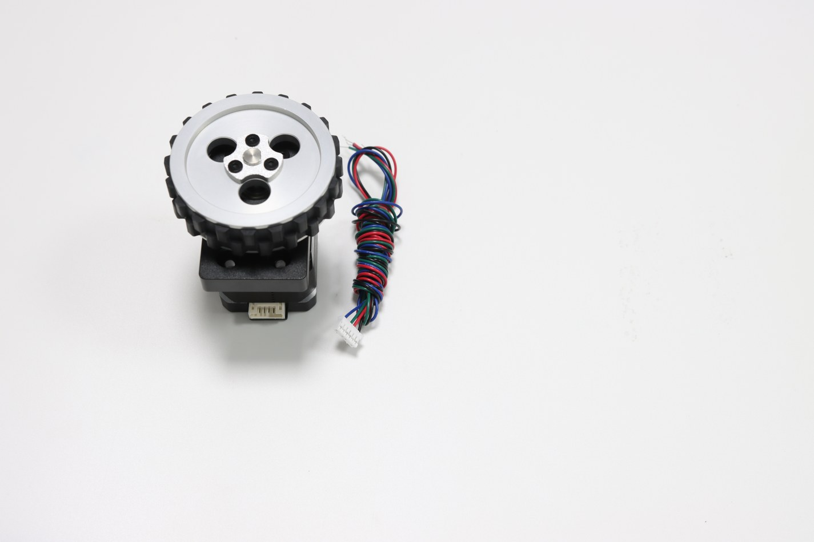
适合已有步进驱动器，希望快速完成机械与电机装配的用户。
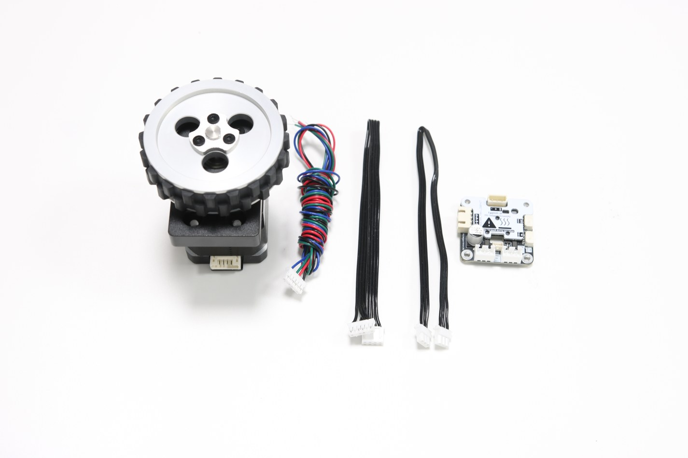
适合希望直接接入 TTL 总线控制，减少驱动板选型与调试时间的用户。
如果你不想从空白 CAD 开始，可以参考开源案例，再按自己的传感器、电池、控制器尺寸调整。
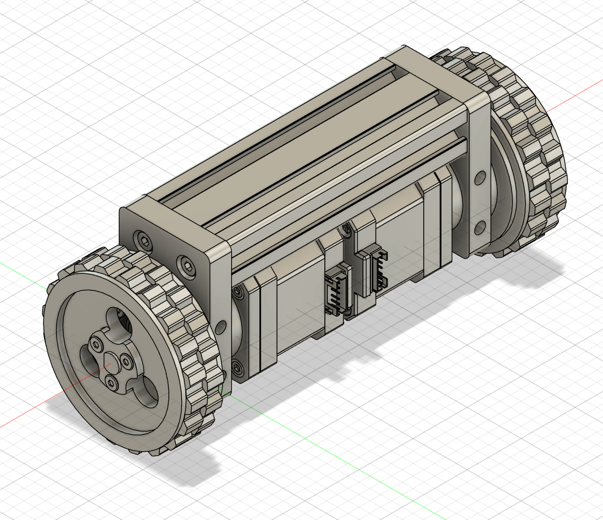
一根 2040 欧标铝型材即可安装驱动轮模组，适合算法教学和控制实验。
安装方式：M4 螺丝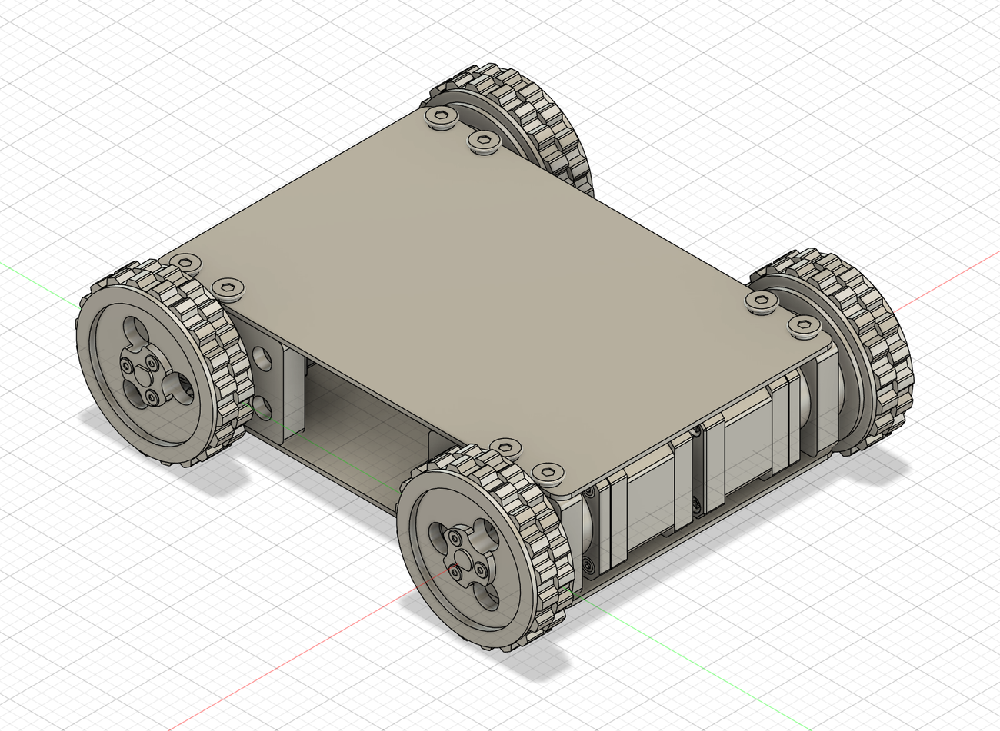
钣金件按孔位加工后即可组装成底盘，适合封闭式小车原型。
安装方式：M6 螺丝 + 弹性垫片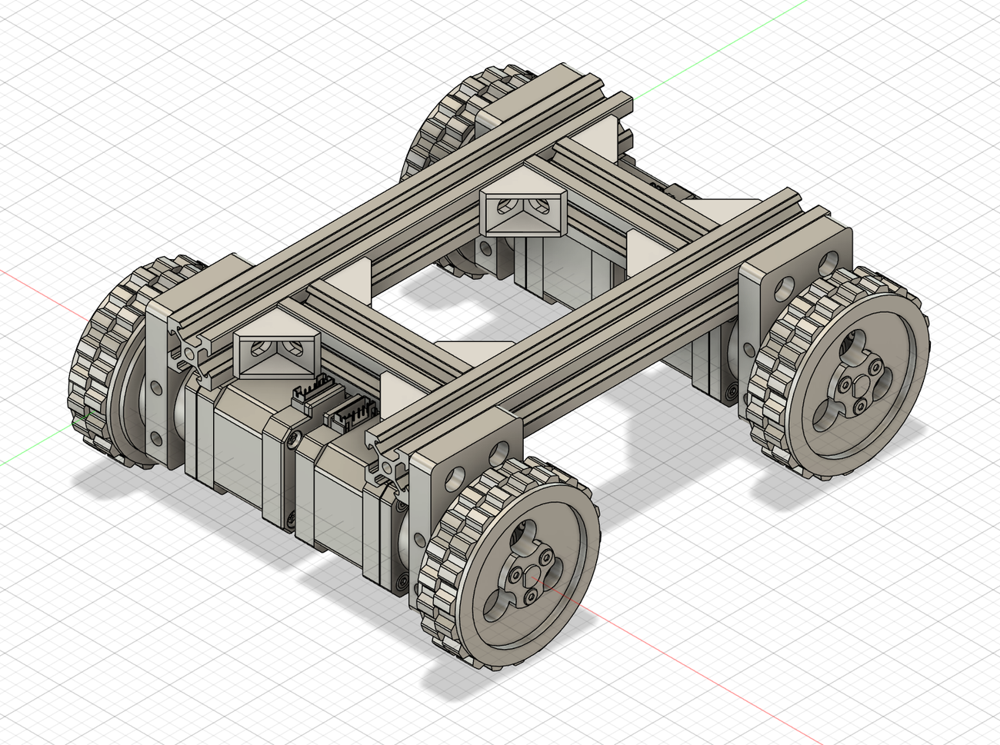
可直接安装在 20 系列铝型材上，便于持续扩展传感器、电池和计算平台。
安装方式：M4 螺丝提供结构模型、装配参考与示例工程，便于二次开发和快速验证。
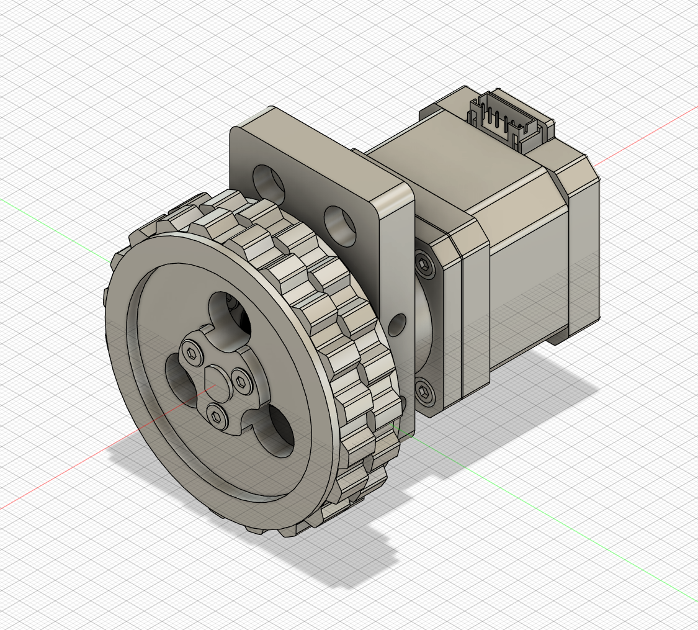
以下参数用于评估底盘结构、供电、驱动与线束设计。默认固件速度较小，优点是柔性启停平滑；如需更高速度，可参考产品文档修改控制相位。
| 产品名称 | DW69 - 机器人底盘驱动轮模组 |
|---|---|
| 产品类型 | 步进电机减速驱动轮模块 |
| 轮子外径 | 69mm |
| 橡胶接地宽度 | 15mm |
| 胎皮材质 / 是否可更换 | 耐磨橡胶 / 可以 |
| 轮毂 / 底座材质 | 6061 铝合金 |
| 轮毂 / 底座工艺 | 车床加工 / CNC 加工 |
| 推荐最大载重 | 单驱动轮模组 12kg |
| 单个模组重量 | 约 600g |
| 电机类型 | 步进电机 + 减速器一体机 |
| 电机减速比 | 5.1818182 |
| 输出静力矩 | 14kg·cm @ 24V 1.5A |
| 推荐工作电压 | 24V |
| 支持输入电压 | 9~25.2V |
| 空载转速 / 车速 | 90rpm / 19.5m/min |
| TTL 驱动板输入电压 | 9~25.2V |
| TTL 驱动板最大相电流 | 1.5A |
| 电机线接口 | 2.0-6P，赠接线 |
| TTL 接口 | 5264-3P，赠接线 |
| 安装螺丝 | 侧面 M6，正面 M4 |
| 左右是否通用 | 是 |
| 3D 模型 / 开源底盘案例 | 提供，免费下载 |
选结构、选驱动、选 TTL 套装；配合开源资料，可以更快完成从设计到跑车的第一步。